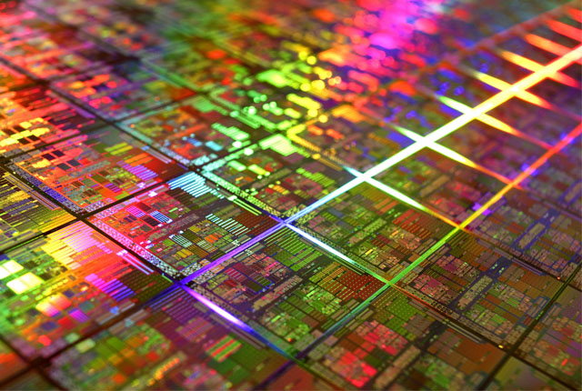
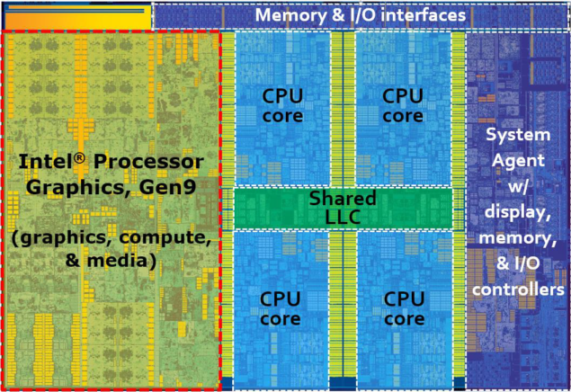

Процесор, або центральний процесор (CPU), є основним виконавчим елементом комп'ютера, який обробляє інструкції та дані. Він складається з мільярдів мікроскопічних транзисторів, що розташовані на кремнієвому чіпі. Ці транзистори працюють як електронні перемикачі, що можуть знаходитися в стані ввімкнено (1) або вимкнено (0), представляючи бінарну систему числення, яка використовується комп'ютерами для обробки інформації.
Транзистори є фундаментальними будівельними блоками процесора. Вони виготовляються з напівпровідникових матеріалів, зазвичай з кремнію. Процес виготовлення транзисторів включає фотографічний метод під назвою фотолітографія, який дозволяє створювати надзвичайно малі та точні зображення на поверхні кремнієвої пластини.
Сучасні технології дозволяють створювати транзистори розміром в декілька нанометрів. Зменшення розміру транзисторів дозволяє розмістити більше їх кількість на одному чіпі, що підвищує продуктивність та зменшує енергоспоживання процесора.
Архітектура процесора визначає його функціональні можливості та продуктивність. Основні компоненти процесора включають:
Процесор працює за допомогою циклу, який складається з трьох основних етапів:
Інструкції передаються процесору у вигляді машинного коду — послідовності бінарних чисел. Архітектура процесора визначає набір інструкцій, які він може виконувати. Блок керування декодує ці інструкції та керує роботою інших компонентів для їх виконання.
Сучасні процесори мають додаткові особливості, які підвищують їх продуктивність:
Все це робить сучасні процесори надзвичайно потужними та ефективними для виконання складних обчислень.